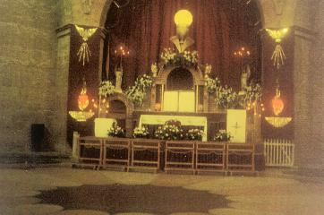
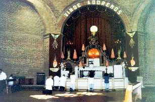
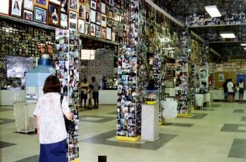
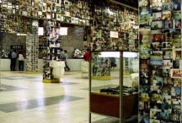
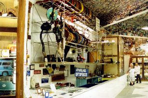

MEDIANEIRA DE TODAS AS
GRAÇAS - Muitos foram os milagres que
o CRIADOR realizou e ainda continua a conceder, pela intercessão poderosa
de NOSSA SENHORA APARECIDA. São sinais de todas as modalidades
possíveis e imagináveis, curas físicas extraordinárias
MEDIANEIRA DE TODAS AS
GRAÇAS - Muitos foram os milagres que
o CRIADOR realizou e ainda continua a conceder, pela intercessão poderosa
de NOSSA SENHORA APARECIDA. São sinais de todas as modalidades
possíveis e imagináveis, curas físicas extraordinárias
onde a ciência não
conseguiu nenhum resultado , deram origem a uma quantidade
notável de "ex-votos"
(fotografias abaixo) de todas as formas, modelos e tipos, que superlotam
um amplo salão na Basílica Nova, construído especialmente para
esta finalidade. E a atuação de nossa MÃE SANTÍSSIMA
não é direcionada para um determinado tipo de pessoa, ela é
universal, ou seja, abrange todas as classes sociais,
beneficiando com misericórdia e atenção, todos que tem fé,
que a procuram e suplicam o seu auxílio e proteção. É verdade
que Ela tem um carinho especial pelos pobres e os menos
favorecidos, por aqueles subjugados pelo trabalho e pelos
escravos dos vícios, que procuram a sua poderosa proteção, a
fim de ficarem curados e se reintegrarem à sociedade.
Cegos recobram a visão, coxos
voltam a andar, cardíacos condenados à morte pela medicina ficam
completamente curados e cheios de vida, mudos voltam a falar
e muitos outros notáveis milagres, fazem parte de uma imensa lista
de ocorrências Divina, pela intervenção de NOSSA SENHORA DA
CONCEIÇÃO APARECIDA. Apenas para evidenciar um pouco as
Obras de nossa MÃE,
citaremos com detalhes dois fatos ocorridos
na época do Brasil Colonial, fatos curiosos que se encontram
registrados no Livro da Cúria Diocesana em Aparecida.
Naquela época, muitos escravos
não suportando o trabalho intenso e os cruéis castigos que recebiam
nas senzalas, que aos poucos corroíam as suas forças e lhes tiravam
a vida, arriscavam-se e fugiam. Era preciso tentar a liberdade,
desaparecer daquele ambiente onde o trabalho representava
um tormento insuportável e a morte. Todavia, na mentalidade
vaidosa dos senhores de escravos, aqueles homens que administravam
os empregados da fazenda, a fuga de um escravo representava uma
ofensa moral imperdoável, que exigia uma pronta
reparação e imediata repressão.
ESCRAVO
ZACARIAS - Certa feita, um
escravo de nome Zacarias, que vivia na senzala de uma grande
Fazenda no Estado do Paraná, cansado de sofrer maus tratos,
fugiu em direção ao Estado de São Paulo. De imediato saiu a
sua procura um famoso "Capitão
do Mato", como eram chamados os perseguidores
de escravos. Vasculhou todas as regiões circunvizinhas até que
o encontrou e prendeu próximo a Bananal, em São Paulo. Depois
de acorrentá-lo com pesados grilhões nos pés e nos braços (um
conjunto de argolas e barras de ferro pesando mais de 7 quilos),
o conduziu de volta ao Paraná. Entretanto, ao passarem pela Vila,
em frente à Igreja de NOSSA SENHORA DA CONCEIÇÃO
APARECIDA, cansado e com fome, com os pés repletos de cortes
por caminhar descalço por estradas pedregosas e cheias de mato,
pediu ao seu caçador para descansar um pouco e rezar na Igreja.
O algoz permitiu e aproximou-se a cavalo da porta de entrada da
Igreja, enquanto Zacarias caminhando uns passos, caiu de joelhos
ao chão em suplicante e dolorida oração. Para espanto do Capitão,
de diversos alunos de um Colégio ao lado da Igreja e de muitas
pessoas na rua que presenciaram a cena, viram soltar-se
milagrosamente os grilhões que prendiam os pés e braços do
escravo, caindo ao chão com grande barulho, deixando-o em
liberdade.
Zacarias em prantos segurou
as correntes com as mãos e correu pelo interior da Igreja, prostrando-se
junto à grade que separava do público, o Altar onde estava a
VIRGEM MARIA. Com as mãos estendidas e o rosto inundado
de lágrimas, agradeceu à NOSSA SENHORA pela providencial
e maternal proteção.
O Capitão do Mato surpreso
desmontou do cavalo e seguido pelas pessoas que testemunharam
o fato, entrou na Igreja para ver de perto o que acabara de presenciar.
Compreendeu que se tratava de uma intervenção sobrenatural e por
essa razão, concordou que o escravo devia ficar em liberdade. Decidiu
não levar Zacarias de volta a senzala de onde fugira. Pediu ao Tesoureiro
da Igreja, que estava presente, uma declaração narrando o
acontecimento, a fim de fazer prova junto ao seu patrão e com a
consciência tranquila de ter feito a melhor escolha, retornou
sozinho ao Paraná.
No Salão do sub-solo denominado "Salão das Promessas" ou "Salão de Ex-Votos", podem ser vistos
os grilhões que acorrentaram o escravo Zacarias.
Fotografias a seguir:



AS PROMESSAS
- Outro costume interessante, eram "As Promessas".
Naquela época, constituía-se um hábito normal, dar um escravo a um Santo
em pagamento de alguma promessa. Só NOSSA SENHORA APARECIDA,
conforme os registros da Cúria, recebeu mais de 60 escravos. Isto significa
dizer, que uma pessoa fazia uma promessa solicitando uma graça e
prometia se alcançasse o benefício, dar um escravo de presente
à VIRGEM MARIA. Os escravos ficavam a serviço da Igreja,
trabalhando com o Padre na Fazenda Paroquial, ou com o Tesoureiro
em providências necessárias ao abastecimento da propriedade
agrícola ou da Igreja, em completo gozo de seus direitos
humanos, ou seja, em plena liberdade. E por isso também, nutriam
grande afeição pela MÃE DE DEUS. Em toda oportunidade,
davam mostras de seu amor, ofertando a NOSSA SENHORA, buquês
de flores silvestres, que zelosamente traziam para ornar o Altar
da SANTA MÃE.
Muitos daqueles escravos prestaram
serviços inestimáveis à Comunidade, inclusive um deles destacou-se como
excelente organista, apesar de nunca ter estudado música. Tocava
magistralmente o órgão da Igreja e se incumbia de organizar e
animar os cantos durante as celebrações festivas e dominicais,
em louvor a VIRGEM APARECIDA.
A verdade é que nossa MÃE SANTÍSSIMA
decidiu por sua grande bondade, dar mostras de seu ilimitado amor
pela humanidade, socorrendo e ajudando todos que a procuram com
sinceridade, principalmente neste bendito recanto brasileiro,
onde diariamente uma multidão de fieis prostram-se aos pés da VIRGEM,
repudiando a maldade e penitenciando-se por causa de seus muitos
pecados, num esforço de dedicação e querendo demonstrar amor
filial, buscando diminuir a imensa distância que os
separam de DEUS.
NOSSA GRATIDÃO - Na imensidão de seus filhos, também nós MÃE querida, ansiamos
pela Vossa atenção, pelos Vossos carinhos e afeto, e ardemos em desejos de
Vos servir, de cantar o Vosso incomensurável amor, de propagar bem alto
a Vossa maravilhosa bondade. Por essa razão, com a alma enlevada e
repleta de agradecimentos por todas as Obras da SENHORA,
versejarei com o Pereira de Carvalho, os lindos versos da "Súplica", que tão
afetuosamente ele arrancou do coração:
"VIRGEM e MÃE, pureza e formosura,
Anjo de amor, Estrela de bondade,
Sob teu manto extingues a amargura,
E dás, no teu olhar, felicidade.
És a
vida sem par, és a ventura,
Neste mundo ilusório és a verdade,
Exclusivo fanal de luz segura,
Que ao Bem conduz a triste humanidade.
Dá-nos
alívio, dá-nos alegria,
No amor do meu JESUS. Ave MARIA!
Conserva-nos na paz do teu redil.
E o teu
conforto e o teu carinho Santo,
Estende à minha terra, em teu encanto,
Rainha e Padroeira do Brasil"!
Próxima
Página
Página
Anterior
Retorna ao
Índice